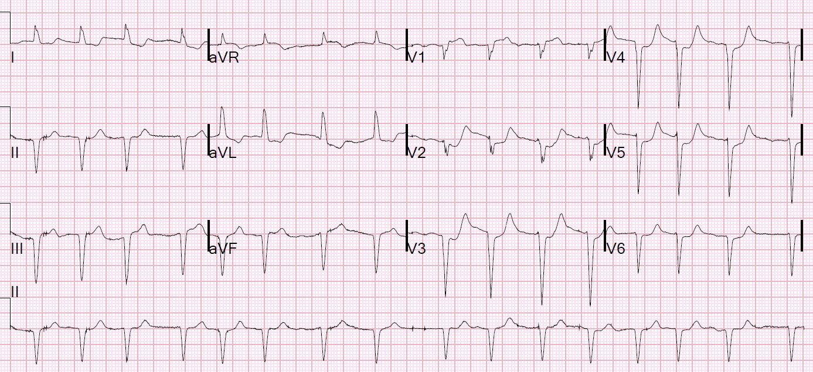
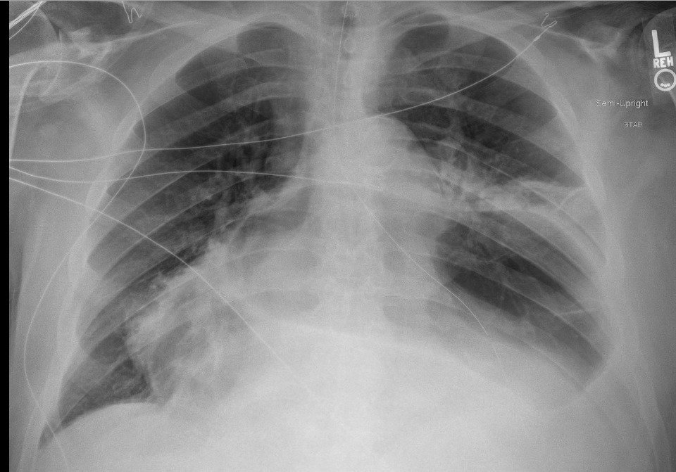
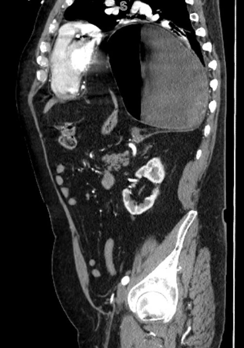
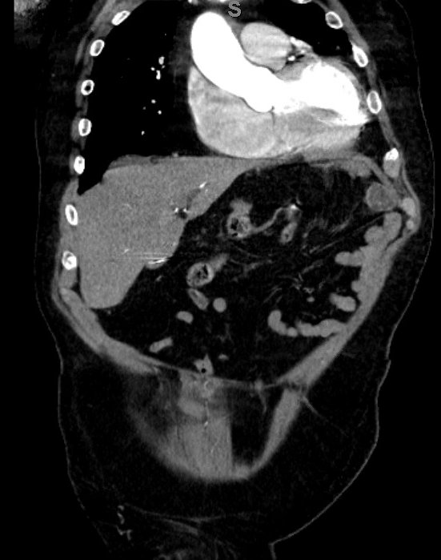
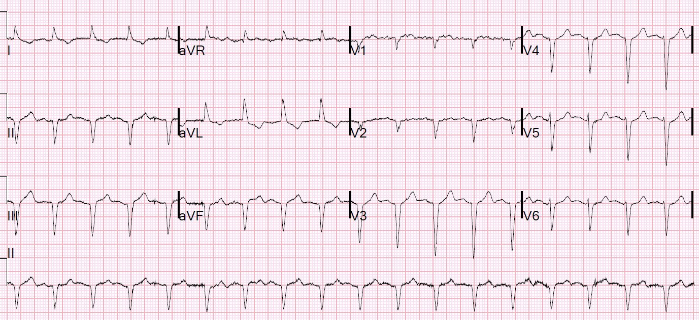
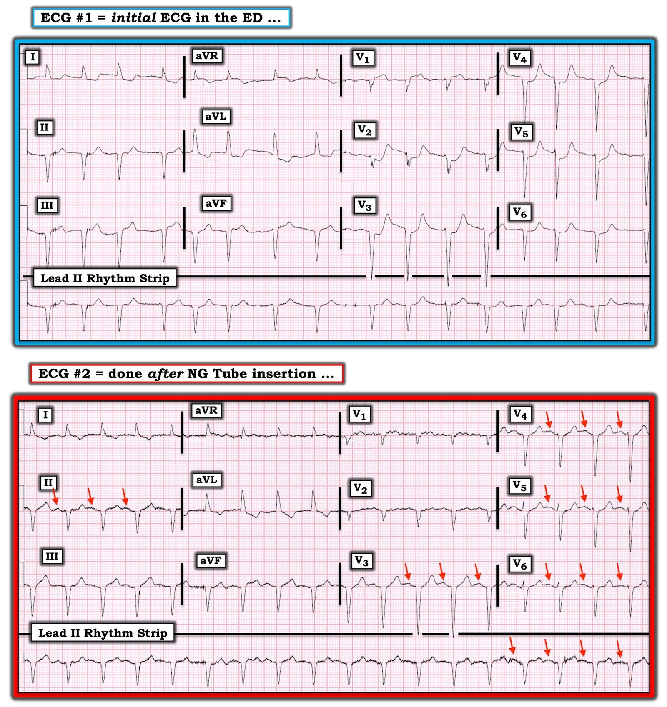

07/07/2020 — Một bệnh nhân nam rất cao tuổi bị đau thượng vị, “điện tâm đồ thiếu máu cục bộ” và hình ảnh học thú vị.
Bản dịch tiếng Việt của bài "An Very Elderly Male with Epigastric pain, “ischemic ECG” and Interesting Imaging." – Dr. Smith’s ECG Blog. Giữ nguyên toàn bộ 8 hình ảnh của bản gốc.
Một bệnh nhân nam rất cao tuổi đến khám vì đau thượng vị từng cơn trong 36 giờ.
Khám lâm sàng không có gì đặc biệt.
Đây là điện tâm đồ của bệnh nhân tại khoa cấp cứu (ED):


Có sóng QS ở các chuyển đạo thành dưới và thành trước, gợi ý nhồi máu cơ tim cũ
Có ST chênh lên thành dưới, kèm ST chênh xuống soi gương ở aVL, cũng như ở V1, gợi ý nhồi máu cơ tim thành dưới và thất phải
Có ST chênh xuống tối đa ở V2 và kéo dài đến V6.
Bạn nghĩ sao?
Đã nghi ngờ nhồi máu cơ tim.
Troponin ban đầu trả về 0,058 ng/mL (giới hạn trên tham chiếu (URL) = 0,030 ng/mL)
Đã chụp X-quang ngực:


Đã chụp CT (đây là một lát cắt đứng dọc):


Đây là một vài lát cắt đứng ngang:
Đây là một lát cắt nằm phía trước phần dạ dày thoát vị ở phía sau


Diễn biến lâm sàng:
Đã đặt ống thông mũi-dạ dày và làm rỗng dạ dày.
Một điện tâm đồ khác được ghi:


Troponin đạt đỉnh 0,078 ng/mL rồi giảm xuống mức không phát hiện được.
Siêu âm tim không thấy rối loạn vận động thành.
Điểm cần học:
Bệnh lý giải phẫu có thể làm thay đổi điện tâm đồ. Trong ca này, tim bị chèn ép đã tạo ra một điện tâm đồ trông giống thiếu máu cục bộ.

===================================
BÌNH LUẬN CỦA TÔI, bởi KEN GRAUER, MD (7/7/2020):
===================================
Ca hôm nay là một lời nhắc đáng giá rằng các bệnh lý cấu trúc ngoài tim có thể làm thay đổi điện tâm đồ — đôi khi một cách ngoạn mục! Ca này là một bệnh nhân cao tuổi đến khoa cấp cứu (ED) với một thoát vị khe thực quản (hiatal hernia) lớn, trong đó dạ dày chứa đầy hơi lồi sâu vào khoang ngực. Như hình CT trong phần bàn luận của Dr. Smith (ở trên) cho thấy — dạ dày căng giãn rõ rệt với vị trí giải phẫu nằm ngay phía sau tim đã ép tim vào thành ngực trước.
- LƯU Ý: HH (thoát vị khe thực quản – Hiatal Hernia) không nhất thiết là một tình trạng lành tính. Bệnh nhân trong ca hôm nay đến với bệnh sử đau thượng vị 36 giờ, đủ nặng để phải đến khoa cấp cứu.
- Các triệu chứng khác được ghi nhận khi có thoát vị khe thực quản lớn (trong đó một phần đáng kể của dạ dày đã đi vào khoang lồng ngực) gồm — khó thở (đặc biệt khi gắng sức) — khó ăn uống — và, khởi phát rối loạn nhịp tim.
- Cơ chế gây rối loạn nhịp được cho là do tim bị chèn ép — có thể ép vào LA (nhĩ trái – Left Atrium), gây rối loạn nhịp nhĩ (đặc biệt là AFib) — và/hoặc ép vào vùng vòng van hai lá, bao gồm cả thành dưới đoạn đáy của LV (thất trái – Left Ventricular) kế cận. Ảnh hưởng thần kinh tự chủ có thể góp phần gây loạn nhịp qua việc chèn ép (do đó kích thích) các dây thần kinh phế vị và giao cảm. Gnanenthiran và cs. đã giả định rằng một hoặc cả hai cơ chế này có thể là nguyên nhân trong Báo cáo ca bệnh của họ về nhịp nhanh thất (Ventricular Tachycardia) được cho là do chèn ép tim gây ra bởi HH (Heart Rhythm Case Reports 4:362-366, 2018).
- Ngoài việc gây loạn nhịp — HH lớn còn có thể tạo ra nhiều bất thường điện tâm đồ khác nhau, bao gồm đoạn ST chênh xuống và/hoặc chênh lên — sóng T đảo ngược ở nhiều chuyển đạo — và/hoặc thay đổi hình thái QRS.
“Điều cần nhớ” – CÁC ĐIỂM THEN CHỐT (PEARLS) từ ca hôm nay:
Theo Điểm cần học của Dr. Smith — Bệnh lý giải phẫu có thể làm thay đổi điện tâm đồ. Những ví dụ tiềm năng khác về các bệnh lý cấu trúc khoang ngực ngoài tim có thể gây thay đổi điện tâm đồ đáng kể gồm: i) tràn khí màng phổi; ii) tràn dịch màng phổi; iii) tổn thương choán chỗ (bao gồm u lành tính và ác tính); iv) biến dạng thành ngực; v) thể trạng to lớn; và, vi) các biến thể giải phẫu (bao gồm tim sang phải và các dạng đảo ngược phủ tạng (situs inversus)). Ngoài các tình trạng đã được mô tả kỹ là tràn dịch màng ngoài tim và các dạng đảo ngược phủ tạng — tôi thấy y văn về chủ đề này còn hạn chế. Tuy vậy, việc lướt qua những tài liệu tôi tìm được đã để lại cho tôi các nhận định sau:
- Mỗi tình trạng trên đều có thể đi kèm các bất thường điện tâm đồ tương tự những gì tôi đã liệt kê ở trên đối với HH lớn = ST chênh xuống và/hoặc chênh lên — sóng T đảo ngược — lệch trục — tăng tiến sóng R kém — sóng Q và/hoặc phức bộ QS. Do đó — mỗi tình trạng trên đều dễ tạo ra hình ảnh giả nhồi máu, như đã xảy ra trong ca hôm nay.
- Vì vậy — Đừng Quên chỉ định (và xem) phim X-quang ngực của bệnh nhân. NẾU triệu chứng chính của bệnh nhân là khó chịu ở ngực — và, điện tâm đồ cho thấy những bất thường sóng ST-T đáng lo ngại — thì thật quá DỄ lao vội theo hướng kích hoạt phòng thông tim cấp cứu, để rồi sau đó mới phát hiện ra một bất thường giải phẫu vốn đã hiển nhiên trên một phim X-quang ngực đơn giản.
Xem lại các điện tâm đồ trong ca hôm nay:
Để cho rõ — tôi đã đặt cả hai bản ghi của ca hôm nay cạnh nhau trong Hình 1. Hãy xem xét các câu hỏi sau:
- BẠN đã đọc điện tâm đồ #1 NHƯ THẾ NÀO?
- Điện tâm đồ #2 được ghi sau khi đặt ống thông mũi-dạ dày giúp giải áp dạ dày. Bệnh nhân này đã từng bị nhồi máu cơ tim trước đây chưa?


SUY NGHĨ CỦA TÔI về điện tâm đồ #1:
Có nhiễu đường nền đáng kể, với các gai nhỏ thẳng đứng xuất hiện cách quãng. Đây không phải là gai tạo nhịp.
- Nhịp nói chung không đều hoàn toàn. Không có sóng P. Do đó — nhịp là AFib, ở đây với đáp ứng thất được kiểm soát.
- Phức bộ QRS có vẻ giãn rộng tối thiểu (thời gian khoảng 0,10-0,11 giây). Hình thái QRS trông giống nguồn gốc trên thất.
- Có phức bộ QS sâu ở mỗi chuyển đạo thành dưới. Có vẻ có một sóng lệch dương ban đầu rất nhỏ ở V1 và V2. Sau đó — các phức bộ QRS thay đổi giữa dạng có sóng r ban đầu nhỏ tương tự với dạng phức bộ QS. Sóng R ở các chuyển đạo ngực không bao giờ vượt quá 2 mm biên độ, nên vùng chuyển tiếp không bao giờ xuất hiện.
- Như Dr. Smith nhận xét — có ST chênh lên nhẹ-nhưng-thật ở mỗi chuyển đạo thành dưới (dù đoạn ST có dạng lõm hướng lên) — kèm ST chênh xuống soi gương ở cả hai chuyển đạo bên cao (I, aVL).
- Ở các chuyển đạo ngực — ST chênh lên ở V1 rõ ràng là bất thường. Các chuyển đạo ngực còn lại đều có ST chênh xuống, mà (như Dr. Smith nhận xét) rõ nhất ở V2. Điểm J chênh xuống ở các chuyển đạo ngực này đi lên thành các sóng T cao và nhọn không tương xứng ở V2 đến V6.
NHẬN ĐỊNH CỦA TÔI: Ở một bệnh nhân có triệu chứng mới — điện tâm đồ #1 chắc chắn phù hợp với ACS (hội chứng vành cấp – Acute Coronary Syndrome) — và có thể phản ánh nhồi máu cấp đang diễn ra.
- Suy nghĩ thêm về điện tâm đồ #1 — QRS giãn rộng nhẹ mà không biểu hiện một rối loạn dẫn truyền đặc hiệu nào + nhịp AFib gợi ý bệnh nhân này nhiều khả năng có một dạng bệnh tim nền nào đó. Các phức bộ QS sâu ở mỗi chuyển đạo thành dưới — cùng sự thiếu vắng đáng chú ý của bất kỳ tăng tiến sóng R nào ở các chuyển đạo ngực trông thật kỳ lạ. Rõ ràng toàn cảnh này có thể phản ánh nhồi máu cũ diện rộng — dù tôi rất ấn tượng với sự giống nhau bất thường của hình dạng QRS-ST/T ở V2 đến V5. Tôi RẤT MUỐN tìm được một điện tâm đồ cũ của bệnh nhân này để giúp phân định đâu là “mới” với “cũ” (hay “mới + cũ” ) — tuy nhiên khi không có bản ghi cũ nào, những thay đổi sóng ST-T mô tả ở trên buộc phải coi là ACS cho đến khi chứng minh được điều ngược lại.
Điều gì xảy ra sau khi giải áp bằng ống thông mũi-dạ dày (NG):
Tôi thấy đặc biệt thú vị khi so sánh từng chuyển đạo hình dạng của điện tâm đồ #2 với điện tâm đồ #1 ban đầu:
- Như Dr. Smith nhận xét — AFib không còn trên điện tâm đồ #2. Việc trở lại nhịp xoang (nhịp nhanh xoang ~105 lần/phút) khó nhận ra vì: i) nhiễu đường nền ở điện tâm đồ #2 còn nhiều hơn so với điện tâm đồ #1 (đặc biệt ở II và V1, vốn thường là các chuyển đạo tốt nhất để phát hiện sóng P xoang); ii) biên độ sóng P nhỏ; và, iii) hình thái sóng P thay đổi từ nhát này sang nhát khác. Dù vậy — việc nhịp trở lại đều và các mũi tên ĐỎ đánh dấu hoạt động nhĩ trên điện tâm đồ #2 đủ nhất quán để xác nhận nhịp xoang đã được tái lập sau khi giải áp bằng ống thông mũi-dạ dày.
- Các phức bộ QS sâu vẫn còn ở cả 3 chuyển đạo thành dưới.
- Mặc dù biên độ sóng R ở các chuyển đạo ngực bên V5 và V6 tăng nhẹ — tăng tiến sóng R vẫn cực kỳ kém trên điện tâm đồ #2.
- Điều thú vị là — có sự thay đổi từng nhát về biên độ sóng R và sóng S ở các chuyển đạo ngực của điện tâm đồ #2. Đây có lẽ là kết quả của biến thiên theo hô hấp do chuyển động của cơ hoành (vốn tiếp giáp với phần dạ dày lồi vào khoang ngực, và nằm sát mặt sau của tim).
- “Tin tốt” (như Dr. Smith nhận xét) — là những thay đổi sóng ST-T trông cấp tính ở V2 đến V5 của điện tâm đồ #2 đã cải thiện rất nhiều. Tôi không chắc rằng ST chênh lên ở các chuyển đạo thành dưới đã giảm — nhưng rõ ràng điểm J chênh xuống ở các chuyển đạo bên cao I và aVL đã ít hơn — và ST chênh lên bất thường ở V1 có lẽ đã hết (dù điều này khó đánh giá do có quá nhiều nhiễu ở V1).
KẾT LUẬN CỦA TÔI: Trước khi tra cứu y văn để bàn luận ca này — tôi chưa đánh giá hết tác động của cơ chế chèn ép tim như một yếu tố gây ra: i) thay đổi hình thái QRS; ii) khởi phát các rối loạn nhịp trên thất và/hoặc thất (bao gồm VT, có thể bền bỉ) — và, iii) tạo ra các thay đổi sóng ST-T (ST chênh lên và/hoặc chênh xuống) có thể giả nhồi máu cũ hoặc mới.
- Hình ảnh CT (như Dr. Smith trình bày) gợi ý rõ ràng rằng trong ca này các cấu trúc tim đã bị chèn ép bởi phần dạ dày căng giãn lồi vào khoang ngực. Có lẽ, mức độ chèn ép tim đã giảm đi rất nhiều sau khi giải áp bằng ống thông mũi-dạ dày — tương ứng với việc hết AFib và giảm rõ rệt các thay đổi sóng ST-T trông cấp tính trên điện tâm đồ #2.
- Dù vậy — bệnh nhân này vẫn còn thoát vị khe thực quản lớn (nhiều khả năng vẫn còn một phần lớn dạ dày lồi vào khoang lồng ngực) — mặc dù thành phần chèn ép tim gây thiếu máu cục bộ và gây loạn nhịp dường như đã được giải tỏa.
- Các phức bộ QS ở chuyển đạo thành dưới và thành trước có thể là hậu quả của khối thoát vị khe thực quản lớn, lồi ra của bệnh nhân này đến MỨC NÀO? Đã từng có điện tâm đồ nào được ghi trước khi hình thành thoát vị khe thực quản chưa? Tôi RẤT MUỐN biết LIỆU các phức bộ QS thành dưới bất thường và tình trạng tăng tiến sóng R kém kéo dài có hết đi nếu thoát vị khe thực quản lớn của bệnh nhân được phẫu thuật sửa chữa hay không. Cuối cùng — Bệnh nhân này có từng bị nhồi máu cơ tim trước đây không? Đáng tiếc — tôi không nghĩ chúng ta có thể trả lời câu hỏi này chỉ với những thông tin hiện có …
- Về mặt lâm sàng — quyết định có nên phẫu thuật sửa chữa thoát vị khe thực quản lớn cho bệnh nhân cao tuổi này hay không có thể khó khăn hơn tôi từng nghĩ trước khi tìm hiểu chủ đề này. Đặt lên bàn cân với tuổi cao và các bệnh đồng mắc nền của bệnh nhân — là bằng chứng CT thuyết phục về việc tim bị chèn ép trực tiếp bởi khối thoát vị khe thực quản + bằng chứng điện tâm đồ cho thấy dạ dày căng giãn tái diễn có nguy cơ làm AFib tái phát kèm thiếu máu cục bộ cơ tim đáng kể.
=================
- GỬI ĐỘC GIẢ: BẠN có những ca bất thường cấu trúc khoang ngực ngoài tim gây thay đổi điện tâm đồ đáng chú ý mà bạn muốn chia sẻ không? Nếu có — vui lòng GỬI cho chúng tôi qua ĐƯỜNG LINK LIÊN HỆ dành cho các điện tâm đồ thú vị (ở cột bên phải của blog này, gần đầu trang).
=================